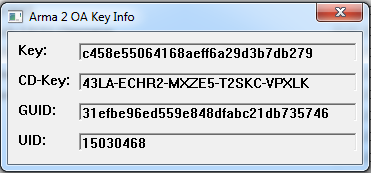

aaa
aaaaaa
Информация по сайту
Как узнать свой GUID в DayZ
Скачать фаилКак узнать свой GUID
СПОСОБ НОМЕР ДВА 1. Запустите игру и зайдите на любой публичный сервер(Сервера с открытым входом, без WhiteList’a) 2. Запишите Ваш GUID, когда он появится в левой нижней части экрана СПОСОБ НОМЕР ТРИ 3. Когда Вы на сервере, введите в зелёный чат команду #my_guid 4. Запишите Ваш GUID, когда он появится: СПОСОБ НОМЕР ЧЕТЫРЕ 5.Установите «Dayz Commander » — перейдите в «Settings» , где увидите «Copy your GUID to the clipboard»